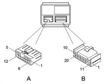
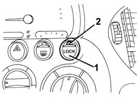

7010M rear electric windows
- Path
- Descriptions > 70 FITTINGS > 7010 PASSENGER COMPARTMENT REAR SIDE DOORS > 7010M rear electric windows
- Kind
- system description
- Applies to
- all engines; all production periods
- Interactive page
- https://sloeber94.github.io/elrnDB-fMltpl/en/#/2888302
Applies to: all engines; production: da 09/03, da 04/02 a 08/03
SPECIFCATIONS
REAR ELECTRIC WINDOWS CONTROL UNIT
Whilst the front electric windows are controlled by the integrated services control unit -(see 5505A multi-function componentsthere is a special control unit for the rear electric windows located under the front seat, passenger side.
Composition
Connections

Control unit pin-out
Connector A
Pin | Signal |
|---|---|
relay | Right electric window motor supply |
relay | Direct supply |
3 | Left electric window motor supply |
4 | Right antipinch sensor earth (N.C.) |
5 | Right antipinch sensor power supply (N.C.) |
6 | Right electric window motor supply |
7 | Direct supply |
8 | Left electric window motor supply |
9 | Electric window earth |
10 | Electric window earth |
11. | Left antipinch sensor earth (N.C.) |
12. | Left antipinch sensor power supply (N.C.) |
Connector B
Pin | Signal |
|---|---|
relay | Earth |
relay | Supply controlled by the ignition |
3 | Left antipinch sensor B input (N.C.) |
4 | Left antipinch sensor A input (N.C.) |
5 | Right antipinch sensor B input (N.C.) |
6 | Right antipinch sensor A input (N.C.) |
9 | Right rear electric window control - down |
10 | Left rear electric window control - down |
13 | Window central locking open/close input (N.C.) |
15 | Right front electric window control - down (N.C.) |
16 | Right front electric window control - up (N.C.) |
17 | Left front electric window control - down (N.C.) |
18 | Left front electric window control - up (N.C.) |
19 | Right rear electric window control - up |
20 | Left rear electric window control - up |
Operating logic
The control unit controls the operation of the two rear windows activated by the button on the door.
For safety reasons it is also possible to exclude the operation of the electric windows using a lock button on the facia near the climate control system controls.

1, rear window lock control 2, lock indication leds activated
The control unit operates the rear windows automatically, in accordance with the following logic which depends how the button is pressed.
- for opening the windows:
- the operation is manual (the glass goes up/down only when the button is pressed) when the button is held down for 60 to 300 milliseconds;
- the operation is instead automatic (the glass continues to go up/down to the end of travel, even if the button is released) when the button is held down for over 300 milliseconds;
- if the button is pressed again during movement of the glass, the glass is stopped instantly;
- if the button is pressed for less than 60 milliseconds, it is ignored (it is considered to have been knocked accidentally).
- for closing the windows:
- operation is only manual.
The control unit also carries out a series of safety checks.
The stopping of the electric windows (switching off the electric supply to the motor) is determined when the glass reaches the end of travel at top or bottom, or if an obstacle blocks the glass. This is regulated by checking the motor current.
If there are faults on the electrical circuits, the control unit switches the system off temporarily, for example if:
- the motor control signals are interrupted or if the current uptake is below the usual values.
- there is a fault in the control buttons (short circuit, or buttons jammed in the pressed position).